163 — Pylephlebitis (huyết khối tĩnh mạch cửa nhiễm khuẩn) & huyết khối tĩnh mạch mạc treo (MVT): cấp cứu bụng / Pylephlebitis & mesenteric venous thrombosis
Tags: pattern:huyet-khoi-mach vung:gan vung:mach-cua vung:ruot protocol:CT-bung-da-thi
Mức chắc chắn (certainty): tổng hợp y văn (literature synthesis) — nhóm tự biên từ y văn mở (Diagnostics 2023 PMC9914785; Life 2025 PMC12565192; J Clin Imaging Sci 2016 PMC5041373; Medicina 2024 PMC11677191; Int J Surg Case Rep 2024 PMC11420455; J Surg Case Rep 2025 PMC12701568; Interv Radiol 2025 PMC12078030; Front Surg 2026 PMC13226624), số liệu lấy nguyên từ bài gốc.
Câu hỏi gốc của bài: bệnh nhân sốt + đau bụng không rõ nguyên nhân, CT thấy khuyết thuốc trong lòng tĩnh mạch cửa — đó là huyết khối nhiễm khuẩn (pylephlebitis), huyết khối lành (bland), huyết khối u (neoplastic) hay huyết khối tĩnh mạch mạc treo (mesenteric venous thrombosis – MVT)? Và vì sao câu trả lời quyết định kháng sinh bao lâu, có chống đông hay không, và có mổ ngay không. Điểm tựa giải phẫu: mọi ổ nhiễm trong vùng dẫn lưu của hệ tĩnh mạch cửa (dạ dày, tụy, tá tràng, ruột non, manh tràng – ruột thừa, đại tràng lên/ngang, đại tràng xuống – trực tràng qua tĩnh mạch mạc treo dưới) đều có thể đổ vi khuẩn vào tĩnh mạch cửa và gây huyết khối mủ.
1. Tổng quan bệnh học – cơ chế hình ảnh
A. Pylephlebitis = viêm tắc tĩnh mạch cửa nhiễm khuẩn (septic thrombophlebitis of the portal vein):
- Cơ chế (tam giác Virchow + nhiễm khuẩn): ổ nhiễm trong ổ bụng → vi khuẩn vào hệ cửa → tổn thương nội mô tĩnh mạch + ứ trệ dòng chảy + tăng đông tại chỗ → hình thành huyết khối mủ trong lòng tĩnh mạch cửa và các nhánh.
- TẠI SAO hình ảnh lại như vậy: huyết khối nhiễm khuẩn chứa mủ, khí và tế bào viêm → trên CT là khuyết thuốc trung tâm, thành mạch ngấm thuốc mạnh (viêm), có thể có bọt khí trong lòng mạch/thành mạch; vi khuẩn theo dòng cửa vào gan → áp-xe gan nhỏ rải rác (thường ở ngoại vi gan phải, nơi dòng cửa mạnh nhất).
- Dịch tễ – số liệu: 0,37–2,7 ca/100.000 người–năm; tổng quan 220 ca (1971–2022): 70,5% nam, tuổi trung vị 50, 12,3% < 18 tuổi, ca nhỏ nhất 20 ngày tuổi (PMC9914785).
- Triệu chứng: sốt 75,5%, đau bụng 66,4%, có thể sốt cao kéo dài, rét run, buồn nôn, vàng da nếu tổn thương gan nặng (PMC9914785).
- Ổ nhiễm nguồn (quan trọng để tìm nguyên nhân): viêm túi thừa 26,5%, viêm ruột thừa 22%, không rõ 11,5%, áp-xe gan 8,5%, viêm dạ dày–ruột 6,5%, sau mổ 6%, viêm tụy 5,5%, bệnh ruột viêm 4%, dị vật 3,5%, viêm đường mật/túi mật 3,5% (PMC9914785).
- Vi khuẩn: E. coli 25%, Bacteroides 17%, Streptococcus 15%; một loại 42,8%, đa loại 27,2%, không xác định được 30% → cấy máu âm không loại trừ bệnh (PMC9914785).
- Tiên lượng: tử vong ~14% trong tổng quan hệ thống; các chuỗi khác báo 11–32% (PMC9914785, PMC12565192).
B. Huyết khối tĩnh mạch mạc treo (mesenteric venous thrombosis – MVT):
- Cơ chế: huyết khối trong tĩnh mạch mạc treo trên (superior mesenteric vein – SMV) hoặc nhánh → ứ máu tĩnh mạch → phù thành ruột, xuất huyết thành ruột, thiếu máu ruột → hoại tử, thủng, tử vong nếu muộn.
- TẠI SAO hình ảnh lại như vậy: tắc dòng ra tĩnh mạch làm áp lực mao mạch – tĩnh mạch tăng → dày thành ruột, phù mạc treo dạng "lược" (comb sign), dịch ổ bụng, khí trong thành ruột (pneumatosis) và khí trong tĩnh mạch cửa khi đã hoại tử.
- Số liệu: MVT chiếm 5–20% các ca thiếu máu ruột cấp (acute mesenteric ischemia – AMI); trong AMI, tắc động mạch mạc treo trên 65%, tắc tĩnh mạch mạc treo 28%, thiếu máu không tắc mạch 7% (PMC11420455, PMC12078030). Trong đoàn hệ dân số Malmö 402 ca (tỉ lệ mổ tử thi 87%), MVT chiếm 16% AMI và mới mắc 2,7/100.000 người–năm, bằng nhau ở hai giới (PMC8258716).
- Kết cục gộp 604 ca / 11 chuỗi hiện đại: cắt ruột 43,9%, can thiệp nội mạch 12,7%, tử vong 30 ngày 9,5%; ở 4 chuỗi chẩn đoán 100% bằng CT, tử vong chỉ 1,2–4,9% → chẩn đoán sớm bằng CT là yếu tố tiên lượng mạnh nhất (PMC8258716).
- Điều trị: chống đông bằng heparin không phân đoạn hoặc heparin trọng lượng phân tử thấp làm giảm tử vong; mổ chỉ khi có viêm phúc mạc/hoại tử ruột, không mổ dự phòng chỉ vì có huyết khối (PMC11420455).
Ngưỡng định lượng mấu chốt (Argon – cửa 1):
- Kháng sinh: 4–6 tuần sau khi có triệu chứng, hiệu chỉnh theo cấy; không có khuyến cáo chống đông cho mọi ca pylephlebitis — chỉ khi huyết khối tiến triển trên hình ảnh lại hoặc sốt dai dẳng dù kháng sinh đúng (PMC9914785).
- Pylephlebitis + áp-xe gan: một chuỗi 15 ca cho thấy áp-xe gan gặp 80%, 14/15 được chống đông, 2 tử vong, 4 phải mổ (PMC12565192).
- MVT: chống đông sớm làm giảm tử vong; mổ khi có viêm phúc mạc/hoại tử ruột (PMC11420455).
- Thời gian chống đông trong MVT: 6 tháng khi có yếu tố nguy cơ thoáng qua (sau mổ, viêm tụy, thuốc tránh thai); suốt đời khi tăng đông di truyền hoặc MVT vô căn, vì tái phát có tỉ lệ tử vong cao; DOAC hiệu quả tương đương kháng vitamin K với cùng tỉ lệ chảy máu (PMC8258716).
- Yếu tố dự báo hoại tử ruột trên CT: quai ruột non giãn ≥ 2,0 cm (OR có ý nghĩa sau hiệu chỉnh), phù thành ruột non, và huyết khối lan vào tĩnh mạch cửa hoặc tắc hoàn toàn SMV đều làm tăng nguy cơ cắt ruột (PMC8258716).
- Cửa sổ CT: huyết khối cấp có đậm độ cao hơn máu lưu thông do hồng cầu cô đặc; thu hẹp cửa sổ (window width) giúp thấy huyết khối rõ hơn trên CT không cản quang (PMC12078030).
2. Mẫu hình + chẩn đoán phân biệt theo vị trí (Gamut)
Gamut theo VỊ TRÍ huyết khối trong hệ cửa – mạc treo:
- Thân tĩnh mạch cửa / nhánh trong gan: pylephlebitis (nhiễm khuẩn), huyết khối lành (xơ gan, tăng đông), huyết khối u (HCC, di căn), khí tĩnh mạch cửa (không do huyết khối).
- Tĩnh mạch mạc treo trên (SMV): MVT (nguyên phát hoặc thứ phát sau mổ, viêm tụy, bệnh ruột viêm, tăng đông), pylephlebitis lan từ ruột thừa/viêm túi thừa, huyết khối u.
- Tĩnh mạch mạc treo dưới / tĩnh mạch lách: hiếm, thường kèm viêm tụy hoặc ung thư.
- Nhu mô gan: áp-xe gan (biến chứng của pylephlebitis), nang/khối u hoại tử.
- Bối cảnh quyết định: sốt + ổ nhiễm trong bụng → pylephlebitis; đau bụng không sốt + yếu tố tăng đông → MVT; xơ gan/HCC + khuyết thuốc ngấm mạch → huyết khối u.
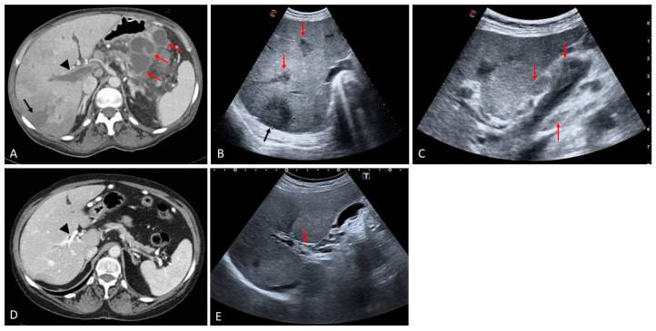
*CT cản quang: viêm tụy bán cấp biến chứng nang giả + viêm tắc tĩnh mạch cửa nhiễm khuẩn (pylephlebitis); khuyết thuốc trong lòng tĩnh mạch và phù quanh mạch. Nguồn: Medicina 2024 (PMC11677191), CC BY 4.0.*Mnemonic "PORTAL" cho pylephlebitis: Pain + Fever (đau bụng + sốt) · Obstruction (khuyết thuốc trong lòng mạch) · Rigors (rét run) · Thrombus with gas (huyết khối có khí) · Abscess gan · Leukocytosis + blood cultures (bạch cầu tăng, cấy máu).
3. Bảng so sánh phân biệt (ma trận đối chiếu)
| Thực thể (entity) | Hình ảnh điển hình (CT/MRI/US) | Chốt vào (rule-in) | Chốt loại (rule-out) | Gợi ý xác nhận |
|---|---|---|---|---|
| Pylephlebitis | Khuyết thuốc trong tĩnh mạch cửa, thành mạch ngấm mạnh, có thể khí trong lòng/thành mạch, áp-xe gan nhỏ, phù mạc treo | Sốt + đau bụng + khuyết thuốc cửa + ổ nhiễm trong bụng (ruột thừa/túi thừa/viêm tụy) | Không sốt, không ổ nhiễm, không khí trong mạch → nghĩ huyết khối lành | CT bụng cản quang thì cửa + cấy máu 2 bộ trước kháng sinh; theo dõi CRP/procalcitonin |
| Huyết khối cửa lành (bland PVT) | Khuyết thuốc không ngấm, mạch không phì đại, có thể tái thông; bối cảnh xơ gan/tăng đông | Khuyết thuốc không ngấm + không sốt + yếu tố tăng đông | Thành mạch ngấm mạnh + khí + sốt → pylephlebitis | CT đa thì; D-dimer; xét nghiệm tăng đông |
| Huyết khối u (neoplastic PVT) | Mạch phình lớn, huyết khối ngấm thì động mạch/cửa, có mạch nuôi trong huyết khối, kèm khối HCC | Ngấm mạch + phì đại mạch + có khối u gan | Không ngấm, không phì đại mạch → lành/nhiễm khuẩn | MRI gadoxetate + DWI; mật độ iod (bài 124) |
| MVT | Khuyết thuốc trong SMV, SMV giãn, phù mạc treo "lược", dày thành ruột, dịch ổ bụng | Khuyết thuốc SMV + đau bụng + yếu tố tăng đông/sau mổ | SMV thông, chỉ tĩnh mạch cửa có huyết khối → pylephlebitis/PVT | CT bụng–chậu cản quang thì cửa; đánh giá thành ruột |
| Khí tĩnh mạch cửa (không do huyết khối) | Khí chạy ra ngoại vi tới dưới bao gan, dạng nhánh; kèm khí thành ruột/mất ngấm thành ruột | Khí trong tĩnh mạch cửa + bệnh cảnh ruột thiếu máu | Có huyết khối đặc trong lòng mạch → huyết khối thật | CT cấp cứu; đánh giá ruột, không chỉ chống đông |
| Áp-xe gan | Ổ dịch bờ ngấm thuốc, có thể có khí; thường nhiều ổ nhỏ ngoại vi khi do pylephlebitis | Ổ dịch trong gan + sốt + cấy máu dương | Nang đơn thuần không ngấm, không khí, không sốt | CT/MRI; chọc hút/dẫn lưu khi > 3–5 cm hoặc không đáp ứng kháng sinh |
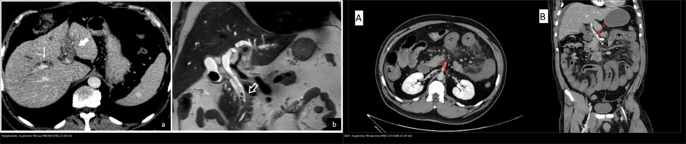
Trái: pylephlebitis — khuyết thuốc trong tĩnh mạch cửa (huyết khối nhiễm khuẩn). Phải: MVT — huyết khối trong tĩnh mạch mạc treo trên, kèm phù mạc treo. Nguồn: Diagnostics 2023 (PMC9914785) + J Surg Case Rep 2025 (PMC12701568), CC BY 4.0. Ảnh ghép letterbox.Ba dấu hiệu hay bị đọc nhầm
- Khí trong tĩnh mạch cửa KHÔNG đồng nghĩa với nhiễm khuẩn: gặp trong thiếu máu/hoại tử ruột, sau thủ thuật, chấn thương; nhưng ở bệnh nhân sốt + ổ nhiễm, khí trong lòng mạch là dấu hiệu mủ rất mạnh.
- Huyết khối "cấp" có thể tăng đậm độ trên CT không cản quang (do hồng cầu cô đặc) — không phải "máu đông bình thường"; thu hẹp cửa sổ giúp nhận ra (PMC12078030).
- Pylephlebitis có thể chỉ là "đám mờ quanh mạch" ở giai đoạn sớm, chưa có khuyết thuốc rõ; đừng chờ đến khi có khí mới chẩn đoán.
4. Protocol chụp + hệ phân độ/điểm chuẩn hóa
- CT bụng–chậu có cản quang, thì tĩnh mạch cửa (60–70 giây), lát mỏng ≤ 1 mm: phương thức đầu tay. Đánh giá tĩnh mạch cửa, SMV, tĩnh mạch lách, tĩnh mạch mạc treo dưới, thành mạch, khí trong mạch, nhu mô gan (áp-xe), thành ruột, mạc treo, dịch ổ bụng.
- Nếu nghi thiếu máu ruột: bổ sung thì động mạch; tìm mất ngấm thành ruột, khí thành ruột, khí tĩnh mạch cửa, dịch ổ bụng — đây là dấu hiệu chỉ định mổ, không phải "theo dõi".
- MRI bụng (T1/T2 fat-sat + DWI + thì mạch): khi CT không rõ hoặc cần phân biệt huyết khối u; không thay thế CT trong cấp cứu.
- Siêu âm bụng: hữu ích ở trẻ/giường bệnh, thấy huyết khối tăng echo trong lòng mạch, nhưng phụ thuộc người làm và dễ bỏ sót khí/áp-xe nhỏ.
- Xét nghiệm: cấy máu 2 bộ (hiếu khí + kỵ khí) TRƯỚC kháng sinh, lactate, CRP/procalcitonin, D-dimer, đông máu, chức năng gan/thận.
- Điều trị (theo bậc):
- Kháng sinh phổ rộng (phủ Gram âm + kỵ khí) ngay khi nghi ngờ, sau đó hiệu chỉnh theo cấy, tổng 4–6 tuần (PMC9914785).
- Chống đông: không bắt buộc cho mọi ca pylephlebitis; cân nhắc khi huyết khối lan vào SMV, tiến triển trên hình ảnh, hoặc sốt dai dẳng; MVT: chống đông sớm (PMC9914785, PMC11420455).
- Can thiệp ổ nhiễm nguồn: cắt ruột thừa, dẫn lưu áp-xe, xử trí viêm túi thừa/viêm tụy.
- Mổ: chỉ khi viêm phúc mạc/hoại tử ruột, không mổ chỉ vì có huyết khối.
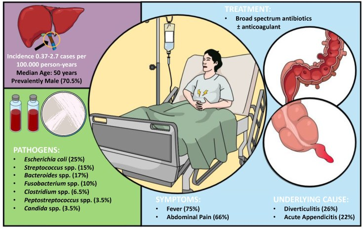
Bảng tổng hợp từ tổng quan hệ thống 220 ca: dịch tễ, vi khuẩn thường gặp, triệu chứng, ổ nhiễm nguồn và nguyên tắc điều trị. Nguồn: Diagnostics 2023 (PMC9914785), CC BY 4.0.flowchart TD
A[Sot + dau bung + o nhiem trong bung] --> B[CT bung-chau can quang thi cua]
B --> C{Co khuyet thuoc trong long tinh mach?}
C -->|Khong| D[Tim o nhiem nguon: ruot thua, tui thua, viem tuy, duong mat]
C -->|Co| E{Thanh mach ngam + khi trong mach + sot?}
E -->|Co| F[Pylephlebitis - cay mau + khang sinh 4-6 tuan]
E -->|Khong| G{Co u gan / ngam mach / phinh mach?}
G -->|Co| H[Huyet khoi U - xu tri theo HCC]
G -->|Khong| I[Huyet khoi lanh - tim yeu to tang dong]
F --> J{Co huyet khoi lan SMV hoac tien trien?}
J -->|Co| K[Them chong dong]
J -->|Khong| L[Theo doi CRP + CT lap lai]
B --> M{Dau hieu thieu mau ruot?}
M -->|Khi thanh ruot / khong ngam / thuong| N[Mo ngay - cat ruot hoat tu]
M -->|Khong| O[Chong dong + theo doi sat]
5. Biến thể bình thường và cạm bẫy
- Huyết khối nhỏ ở nhánh tĩnh mạch cửa có thể bị bỏ sót trên CT không cản quang — luôn chụp có cản quang thì cửa khi bệnh nhân sốt + đau bụng.
- Cấy máu âm trong ~30% ca pylephlebitis — không loại trừ; nên lấy cấy trước kháng sinh và lặp lại nếu cần (PMC9914785).
- Khí trong tĩnh mạch cửa không đồng nghĩa tử vong/hoại tử — có thể do thủ thuật hoặc thiếu máu thoáng qua; bối cảnh lâm sàng + thành ruột quyết định.
- MVT dễ bị chẩn đoán nhầm thành viêm tụy/viêm dạ dày–ruột vì đau bụng lan tỏa, men tụy có thể tăng nhẹ; ca minh họa PMC11420455 ban đầu được chẩn đoán "viêm tụy cấp" trước khi CT cản quang phát hiện huyết khối.
- Pylephlebitis sau mổ hoặc sau đặt catheter: huyết khối có thể vô khuẩn; đừng mặc định nhiễm khuẩn nếu không có sốt/ổ nhiễm.
- Cạm bẫy "thỏa mãn tìm kiếm": thấy huyết khối cửa là dừng — phải tìm ổ nhiễm nguồn (ruột thừa, túi thừa, viêm tụy, đường mật) và đánh giá SMV/thành ruột để không bỏ hoại tử ruột.
- Cạm bẫy mặt cắt: khuyết thuốc do dòng chảy/tạo ảnh trong tĩnh mạch cửa thay đổi giữa các thì; huyết khối thật cố định ở mọi thì và thường có viền thành mạch ngấm.
- Cạm bẫy NẶNG NHẤT của MVT — độ dày thành ruột, mức phù mạc treo và lượng dịch ổ bụng KHÔNG phản ánh mức độ tổn thương ruột: trong MVT, thành ruột dày + mạc treo "mờ" + nhiều dịch có thể chỉ là ứ máu tĩnh mạch hồi phục được, không phải hoại tử; quyết định mổ phải dựa vào lâm sàng (viêm phúc mạc), lactate và dấu hiệu hoại tử (mất ngấm thành, khí trong thành) chứ không dựa vào "thành dày bao nhiêu" (PMC12078030).
- Huyết khối lan vào tĩnh mạch cửa làm GIẢM nguy cơ nhồi máu xuyên thành so với huyết khối khu trú ở tĩnh mạch mạc treo xa — vì tĩnh mạch cửa còn đường bàng hệ; ngược trực giác nhưng đã được ghi nhận, nên đừng mổ chỉ vì huyết khối "lan xa" (PMC12078030).
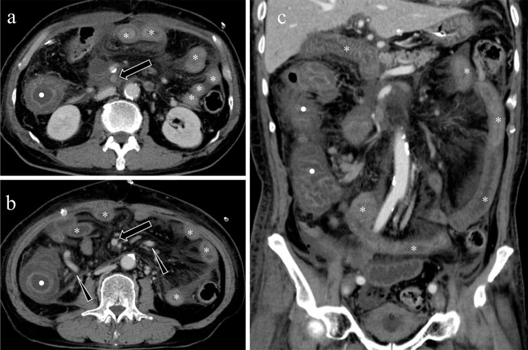
Hình — Nam 76 tuổi sau cắt khối tá tụy 4 ngày: (a) khuyết thuốc ở SMV đoạn gần (mũi tên), (b) SMV xa còn thông và đã có bàng hệ (đầu mũi tên); (a–c) dày thành ruột non phân lớp (sao) và đại tràng lên (chấm) kèm mờ mạc treo. Đây là ca ứ máu tĩnh mạch nặng nhưng còn hồi phục — minh họa cho cạm bẫy "mức dày thành không bằng mức hoại tử". Nguồn: Interventional Radiology 2025 (PMC12078030), CC BY-NC 4.0, ảnh nguyên bản.6. Tự lượng giá — Blind Quiz ngay trên trang tĩnh (không cần app)
Ca 1 — Nam 35 tuổi, sốt + đau bụng dưới phải 3 ngày; siêu âm và CT bụng.
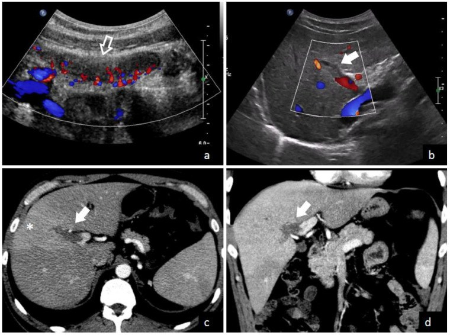
- Gợi ý lâm sàng (clinical context): sốt cao, đau hố chậu phải, bạch cầu tăng.
- Câu hỏi: Hai bất thường chính trên ảnh? Chẩn đoán liên kết giữa chúng? Cần làm gì ngay?
Bấm để hiện đáp án (findings + chẩn đoán)
- Dấu hiệu (findings): (a, b) siêu âm Doppler: ruột thừa viêm (mũi tên trắng), tăng sinh mạch; (c, d) CT cản quang: khuyết thuốc trong tĩnh mạch cửa (mũi tên trắng) + áp-xe gan nhỏ (dấu sao).
- Chẩn đoán (diagnosis): pylephlebitis do viêm ruột thừa cấp — vi khuẩn từ ruột thừa vào tĩnh mạch mạc treo rồi tĩnh mạch cửa, gây huyết khối mủ và áp-xe gan.
- Xử trí: cấy máu trước kháng sinh + kháng sinh phổ rộng phủ Gram âm/kỵ khí 4–6 tuần + cắt ruột thừa; cân nhắc chống đông nếu huyết khối lan hoặc sốt dai dẳng; dẫn lưu áp-xe nếu lớn.
- Nguồn ảnh: Fusaro L et al., Diagnostics 2023, PMC9914785 (Fig. 3), CC BY 4.0.
Ca 2 — Nam 58 tuổi, sốt rét run + đau hạ sườn phải; CT bụng thì cửa.
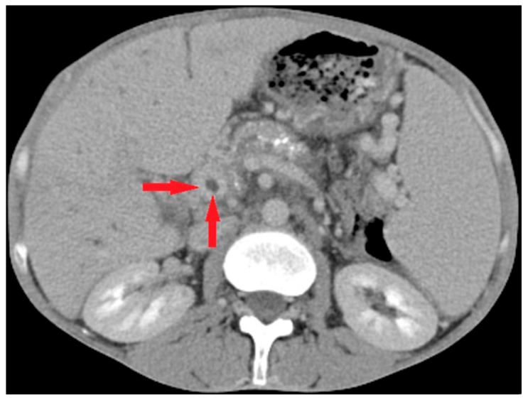
- Gợi ý: không có tiền sử xơ gan; CRP tăng mạnh.
- Câu hỏi: Mô tả tổn thương mạch? Vì sao đây là "huyết khối mủ" chứ không phải huyết khối lành?
Bấm để hiện đáp án (findings + chẩn đoán)
- Dấu hiệu (findings): khuyết thuốc trung tâm trong tĩnh mạch cửa (mũi tên đỏ), thành mạch ngấm thuốc, kèm bọt khí nhỏ trong lòng/thành mạch.
- Chẩn đoán (diagnosis): pylephlebitis (huyết khối tĩnh mạch cửa nhiễm khuẩn) — khí + thành mạch ngấm + sốt rét run là bộ ba gợi ý mủ.
- Vì sao không phải huyết khối lành: huyết khối lành không có khí, không ngấm thành mạch mạnh, và không kèm hội chứng nhiễm trùng; ở đây bệnh cảnh nhiễm khuẩn rõ.
- Xử trí: kháng sinh phổ rộng 4–6 tuần + cấy máu; tìm ổ nhiễm nguồn; chống đông nếu lan SMV/tiến triển.
- Nguồn ảnh: Benea SN et al., Life 2025, PMC12565192 (Fig. 2), CC BY 4.0.
Ca 3 — Nam 47 tuổi, sốt 3 tháng, sụt cân; CT bụng 3 bình diện.
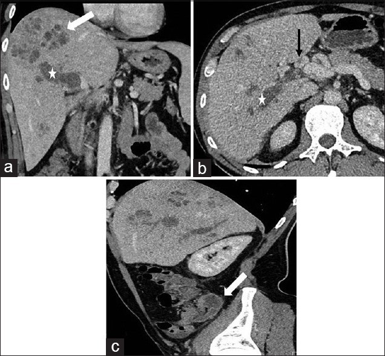
- Gợi ý: sốt kéo dài, rét run, không đau bụng dữ dội; tiền sử viêm ruột thừa mạn.
- Câu hỏi: Mô tả tổn thương gan và mạch? Vì sao sốt kéo dài 3 tháng?
Bấm để hiện đáp án (findings + chẩn đoán)
- Dấu hiệu (findings): (a) áp-xe gan nhiều ổ (mũi tên trắng) + huyết khối tĩnh mạch cửa (dấu sao); (b) mặt cắt ngang: huyết khối trong tĩnh mạch cửa (mũi tên đen); (c) mặt cắt dọc: huyết khối lan dọc mạch (mũi tên trắng).
- Chẩn đoán (diagnosis): pylephlebitis + áp-xe gan do viêm ruột thừa mạn — ổ nhiễm kín đáo nuôi dưỡng huyết khối mủ, gây sốt kéo dài và sụt cân.
- Bài học: sốt kéo dài không rõ nguyên nhân + áp-xe gan nhiều ổ phải truy tĩnh mạch cửa; nguồn có thể là viêm ruột thừa mạn không triệu chứng rầm rộ.
- Nguồn ảnh: Santosh D, Low G, J Clin Imaging Sci 2016, PMC5041373 (Fig. 3), CC BY-NC-SA 3.0 (giữ nguyên bản).
Ca 4 — Hai bệnh nhân: một sốt + huyết khối cửa, một đau bụng + huyết khối mạc treo.
- Câu hỏi: Phân biệt hai hình theo vị trí và bối cảnh; điều trị khác nhau ở điểm nào?
Bấm để hiện đáp án (findings + chẩn đoán)
- Trái — pylephlebitis: khuyết thuốc trong tĩnh mạch cửa, bệnh nhân sốt + ổ nhiễm; điều trị kháng sinh 4–6 tuần ± chống đông chọn lọc.
- Phải — MVT: khuyết thuốc trong tĩnh mạch mạc treo trên, bệnh nhân đau bụng + yếu tố tăng đông/sau mổ; điều trị chống đông sớm, mổ nếu hoại tử ruột.
- Điểm chung: cả hai đều là huyết khối trong hệ cửa–mạc treo; khác nhau ở vị trí và bối cảnh nhiễm khuẩn quyết định kháng sinh vs chống đông.
- Nguồn ảnh: Diagnostics 2023 (PMC9914785) + J Surg Case Rep 2025 (PMC12701568), CC BY 4.0. Ảnh ghép letterbox.
Ca 5 — CT không cản quang ở bệnh nhân đau bụng: làm sao thấy huyết khối?
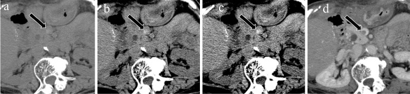
- Câu hỏi: Vì sao huyết khối có thể thấy trên CT không cản quang? Cửa sổ nào tối ưu?
Bấm để hiện đáp án (findings + chẩn đoán)
- Dấu hiệu (findings): huyết khối tăng đậm độ so với máu lưu thông (do hồng cầu cô đặc, nồng độ sắt cao), thấy rõ hơn khi thu hẹp cửa sổ (ảnh b, c) so với cửa sổ mặc định (ảnh a).
- Chẩn đoán (diagnosis): huyết khối tĩnh mạch mạc treo — dấu hiệu gián tiếp giúp định hướng trước khi chụp cản quang.
- Lưu ý: đây chỉ là dấu hiệu gợi ý; CT cản quang thì cửa vẫn là chuẩn để xác định vị trí, mức lan và đánh giá ruột.
- Nguồn ảnh: Inoue A et al., Interv Radiol 2025, PMC12078030 (Fig. 1), CC BY-NC 4.0 (giữ nguyên bản).
Ca 6 — Bệnh nhân MVT tiến triển: khi nào phải mổ?
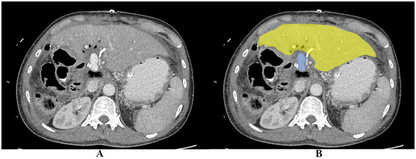
- Gợi ý: đau bụng tăng dần, lactate tăng, không đáp ứng chống đông.
- Câu hỏi: Dấu hiệu nào trên CT buộc phải mổ? Vì sao không tiếp tục theo dõi?
Bấm để hiện đáp án (findings + chẩn đoán)
- Dấu hiệu (findings): thiếu máu ruột non từng đoạn (mũi tên vàng): thành ruột mất ngấm thuốc, phù, có thể khí thành ruột, dịch ổ bụng; mạc treo phù.
- Chẩn đoán (diagnosis): hoại tử/thiếu máu ruột do MVT — biến chứng đe dọa tính mạng.
- Chỉ định mổ: viêm phúc mạc, hoại tử ruột, thủng, hoặc suy tạng tiến triển; mổ để cắt đoạn ruột hoại tử và đánh giá khả năng sống của ruột. Chống đông đơn thuần không cứu được ruột đã hoại tử.
- Nguồn ảnh: Tan ZS et al., Front Surg 2026, PMC13226624 (Fig. 3), CC BY 4.0.
Ca 7 — Sơ đồ giải phẫu: vì sao viêm túi thừa/ruột thừa lại gây huyết khối cửa?
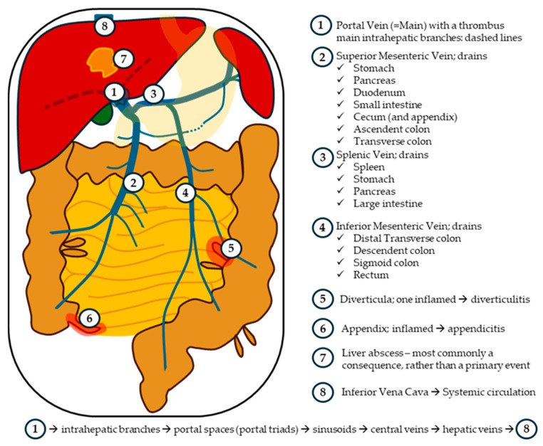
- Câu hỏi: Nhìn sơ đồ, kể 3 ổ nhiễm có thể dẫn đến pylephlebitis; vì sao áp-xe gan thường là hậu quả chứ không phải nguyên nhân?
Bấm để hiện đáp án (findings + chẩn đoán)
- Ba ổ nhiễm: viêm túi thừa (tĩnh mạch mạc treo dưới), viêm ruột thừa (tĩnh mạch hồi manh tràng), viêm tụy/viêm đường mật (tĩnh mạch lách/cửa).
- Vì sao áp-xe gan là hậu quả: vi khuẩn theo dòng cửa vào gan trước, gây viêm và huyết khối mủ; áp-xe gan xuất hiện sau khi huyết khối hình thành, không phải nguồn ban đầu.
- Hệ quả thực hành: khi thấy áp-xe gan "không rõ nguyên nhân", phải truy ổ nhiễm trong ổ bụng và đánh giá tĩnh mạch cửa.
- Nguồn ảnh: Benea SN et al., Life 2025, PMC12565192 (Fig. 1), CC BY 4.0.
Ca 8 — MVT ở bệnh nhân được chẩn đoán ban đầu là "viêm tụy cấp": theo dõi sau 24 giờ.
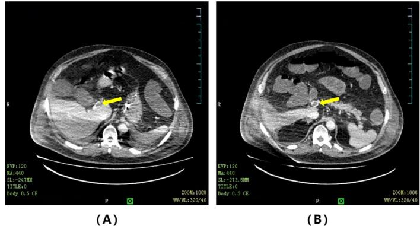
- Gợi ý: đau bụng lan tỏa, men tụy tăng nhẹ, dịch ổ bụng tăng nhanh.
- Câu hỏi: Vì sao chẩn đoán ban đầu dễ nhầm? Huyết khối nằm ở đâu và điều trị nào làm giảm tử vong?
Bấm để hiện đáp án (findings + chẩn đoán)
- Dấu hiệu (findings): hình A: huyết khối tĩnh mạch cửa; hình B: huyết khối tĩnh mạch mạc treo trên; kèm phù mạc treo và dịch ổ bụng.
- Chẩn đoán (diagnosis): huyết khối tĩnh mạch mạc treo (MVT) — khởi phát âm thầm, triệu chứng và xét nghiệm không đặc hiệu nên dễ nhầm với viêm tụy/viêm dạ dày–ruột.
- Điều trị: chống đông sớm bằng heparin không phân đoạn hoặc heparin trọng lượng phân tử thấp làm giảm tử vong; mổ chỉ khi có viêm phúc mạc/hoại tử ruột.
- Nguồn ảnh: Lin H et al., Int J Surg Case Rep 2024, PMC11420455 (Fig. 3), CC BY-NC-ND 4.0 (giữ nguyên bản).
Ca 9 — Cùng bệnh nhân sau điều trị: huyết khối thay đổi thế nào?
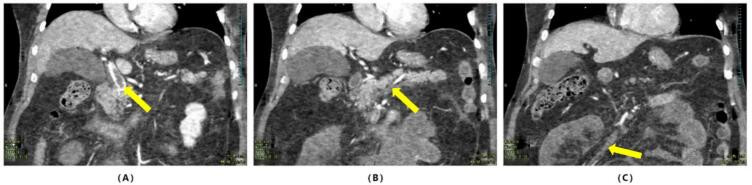
- Câu hỏi: Đánh giá đáp ứng điều trị dựa trên gì? Khi nào cần can thiệp thêm?
Bấm để hiện đáp án (findings + chẩn đoán)
- Dấu hiệu (findings): hình A: huyết khối tĩnh mạch cửa còn tồn tại nhưng có dòng máu đi vòng quanh; hình B, C: huyết khối tĩnh mạch mạc treo còn nhưng kích thước/thành mạch thay đổi.
- Đánh giá: theo dõi bằng CT cản quang lặp lại + lâm sàng (đau bụng, sốt, lactate) + D-dimer; mục tiêu là tái thông hoặc co nhỏ huyết khối, không nhất thiết mất hoàn toàn.
- Can thiệp thêm: nếu đau tăng, lactate tăng, dấu hiệu hoại tử ruột → mổ; nếu huyết khối lan rộng dù đã chống đông → cân nhắc can thiệp mạch/huyết khối học.
- Nguồn ảnh: Lin H et al., Int J Surg Case Rep 2024, PMC11420455 (Fig. 5), CC BY-NC-ND 4.0 (giữ nguyên bản).
Bài liên quan chéo
- 100 – Tổng quan hệ Bụng
- 110 – Giải phẫu bụng cắt lớp
- 124 – Bệnh mạch máu gan: Budd-Chiari, SOS/VOD & huyết khối tĩnh mạch cửa
- 130 – Túi mật
- 131 – Tắc mật & sỏi ống mật chủ
- 134 – U nhầy ruột thừa chưa vỡ (LAMN/HAMN)
- 135 – Viêm tụy cấp (Atlanta)
- 140 – Lách & chấn thương tạng đặc
- 162 – Tắc ruột
- 165 – Dày thành ruột
- 175 – Chèn ép mạch & nút mạch
Ảnh
- Tên file:
163_slug_Modality_SourceID.jpg. Nguồn + giấy phép (license) từng ảnh trongimages/CREDITS.md. - Ảnh CC BY 4.0 được phép ghép letterbox (composite); ảnh CC BY-NC-ND/CC BY-NC-SA giữ nguyên bản, không crop/ghép.
- AuntMinnie (Case of the Day): chỉ dẫn link, không tải.
Không dùng để chẩn đoán độc lập khi chưa có người hướng dẫn.